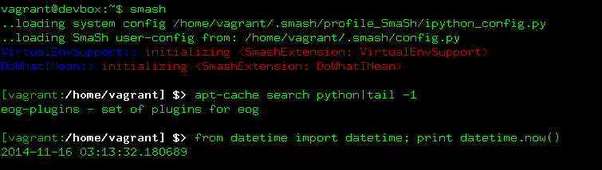

System Shell + Python Support
Smash functions as a normal system shell, but it also has full fledged python interpretter. The goal is to be unsurprising and seamless, doing shell stuff in the shell places and python stuff in the python places. If you're a bash user or an ipython user, many aspects of your existing configuration efforts can also be inherited automatically.

If you don't care anything about python, you can ignore the python features of Smash completely. If you are a python programmer, then you probably spend as much time in a python interpretter as you do in shell. Why not trade those two windows for just one and reduce your screen clutter? You can start reading here to find out some of the other python friendly features of smash.
Prompt
By default smash ships with the wonderfully dynamic liquidprompt tool. Liquidprompt has rich options for configuration and it's recommended that you configure it in the normal way, but, some of these options can be overridden from ~/.smash/config.py. (See the liquidprompt plugin information for more details.) The default liquidprompt configuration features a prompt that shows activated python virtual environments, as well as VCS branch and commit/stash status, etc. Other options include everything from cpu/battery status to write-permissions for the current directory. Take a look at how it updates below based on the context:

The prompt can be turned off by disabling the liquid prompt plugin, and either setting PS1' as usual or prompt_manager.in_template Support for powerline prompts isn't installed by default, but adding it should be easy. If you can't live without that, make an issue of it!
Tab Completion System
Depending on the context, tab completion information is derived either from ipython (for python namespaces, ipython aliases, etc) or directly from bash (for system commands / paths, hostnames, VCS subcommands, debian packages, whatever your system supports). Thus if you now use bash exclusively** then this means that no effort at all goes into porting old completers into smash shell. For building new completion mechanisms, you have the option of writing them inside or outside of smash, based on your preference.

**: if you are a zsh wizard, please help fix issue 11!
Configuration
The main documentation for configuration is here, and this section is just a summary. Smash configuration aims at being simple and self-contained. Everything is configured in JSON files which are stored in ~/.smash/etc. You can have per-project aliases and environment variables and enable or disable a variety of plugins.
Plugins / Extensions
Smash has lots of plugins that extend or modify the core behaviour. Some plugins are turned on by default, some are complete but opt-in, and still others are works in progress, demonstrations, or proof-of-concepts. The smash core just includes essential stuff, so it's safe to assume that most of the functionality described in this documentation is technically describing smash plugins. If you're interested in reading about or configuring individual plugins, see the list of plugins. If you want to write a new plugin, check out the documentation here